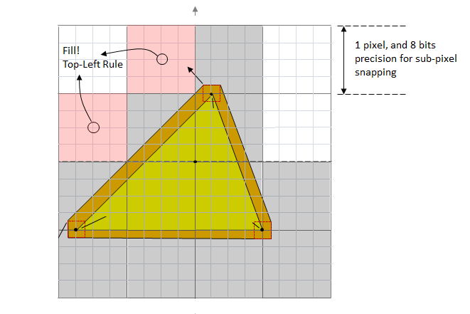

Conservative rasterization adds some certainty to pixel rendering, which is helpful in particular to collision detection algorithms.
Conservative rasterization means that all pixels that are at least partially covered by a rendered primitive are rasterized, which means that the pixel shader is invoked. Normal behavior is sampling, which is not used if conservative rasterization is enabled.
Conservative rasterization is useful in a number of situations, including for certainty in collision detection, occlusion culling, and visibility detection.
For example, the following figure shows a green triangle rendered using conservative rasterization. The brown area is known as an "uncertainty region" - a region where rounding errors and other issues add some uncertainty to the exact dimensions of the triangle. The red triangles at each vertex show how the uncertainty region is calculated. The large gray squares show the pixels that will be rendered. The pink squares show pixels rendered using the "top-left rule", which comes into play as the edge of the triangle crosses the edge of the pixels. There can be false positives (pixels set that should not have been) which the system will normally but not always cull.

For many details on how conservative rasterization interacts with the graphics pipeline, refer to D3D12 Conservative rasterization.
The type of rasterization supported in Direct3D 12 is sometimes referred to as "overestimated conservative rasterization". There is also the concept of "underestimated conservative rasterization", which means that only pixels that are fully covered by a rendered primitive are rasterized. Underestimated conservative rasterization information is available through the pixel shader through the use of input coverage data, and only overestimated conservative rasterization is available as a rasterizing mode.
If any part of a primitive overlaps a pixel, then that pixel is considered covered and is then rasterized. When an edge or corner of a primitive falls along the edge or corner of a pixel, the application of the "top-left rule" is implementation-specific. However, for implementations that support degenerate triangles, a degenerate triangle along an edge or corner must cover at least one pixel.
Conservative rasterization implementations can vary on different hardware, and do produce false positives, meaning that they can incorrectly decide that pixels are covered. This can occur because of implementation-specific details like primitive growing or snapping errors inherent in the fixed-point vertex coordinates used in rasterization. The reason false positives (with respect to fixed point vertex coordinates) are valid is because some amount of false positives are needed to allow an implementation to do coverage evaluation against post-snapped vertices (i.e. vertex coordinates that have been converted from floating point to the 16.8 fixed-point used in the rasterizer), but honor the coverage produced by the original floating point vertex coordinates.
Conservative rasterization implementations do not produce false negatives with respect to the floating-point vertex coordinates for non-degenerate post-snap primitives: if any part of a primitive overlaps any part of a pixel, then that pixel is rasterized.
Triangles that are degenerate (duplicate indices in an index buffer or collinear in 3D), or become degenerate after fixed-point conversion (collinear vertices in the rasterizer), may or may not be culled; both are valid behaviors. Degenerate triangles must be considered back facing, so if a specific behavior is required by an application, it can use back-face culling or test for front facing. Degenerate triangles use the values assigned to Vertex 0 for all interpolated values.
There are three tiers of hardware support, in addition to the possibility that the hardware does not support this feature.
SV_InnerCoverage to High Level Shading Language (HLSL). This is a 32-bit scalar integer that can be specified on input to a pixel shader, and represents the underestimated conservative rasterization information (that is, whether a pixel is guaranteed-to-be-fully covered).The following methods, structures, enums, and helper classes reference conservative rasterization: